Title
Paradise Hearts — the arrival. Charter serif wordmark, gold-shimmer italic, palm silhouettes against a sunset horizon.
A Paradise Hearts production
Golden Playthrough — the sizzle reel.
12 beats · captured 2026-08-19 · 1600 × 900
Paradise Hearts — the arrival. Charter serif wordmark, gold-shimmer italic, palm silhouettes against a sunset horizon.
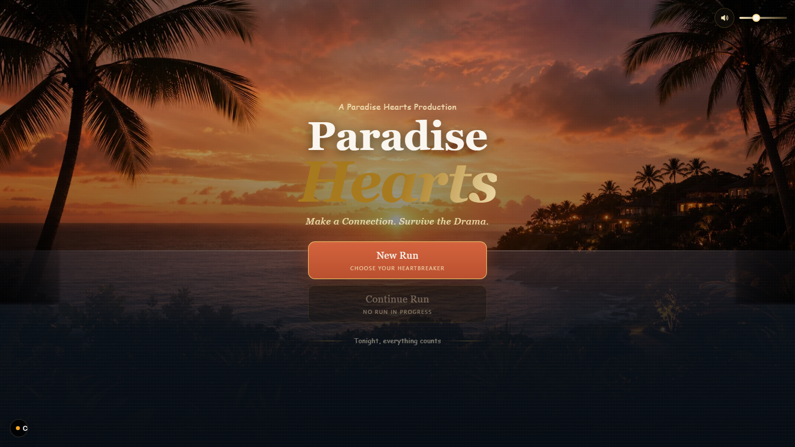
Choose your Heartbreaker. A grid of pre-made roster cards beside a live casting-card preview with outfit-graded lighting, and a 'Play as …' CTA.
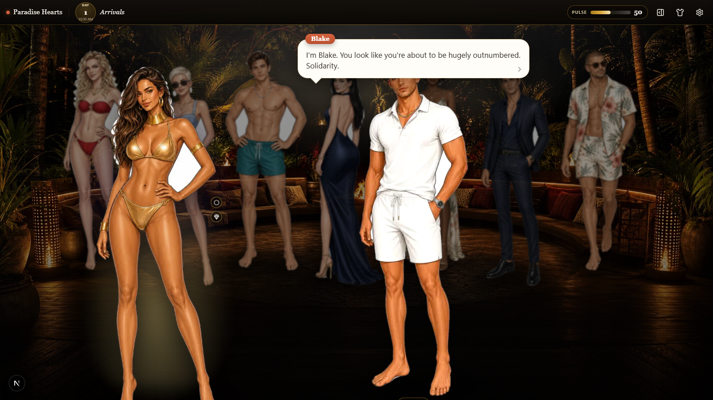
Day-1 introductions play through the same cinematic scene system used by ordinary conversations and event narration.
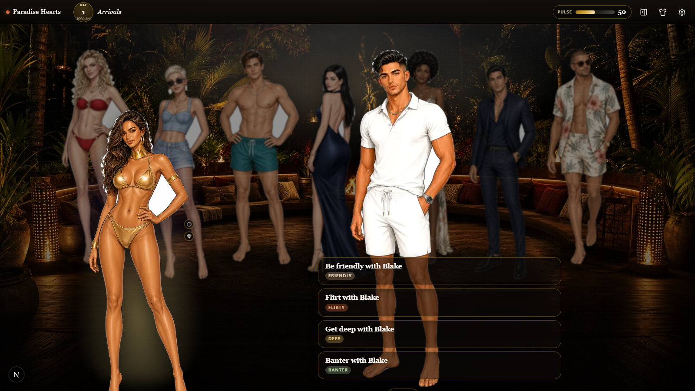
The player gets four fully written responses — Friendly, Flirty, Deep, and Banter — from the engine's shared legal-action surface.
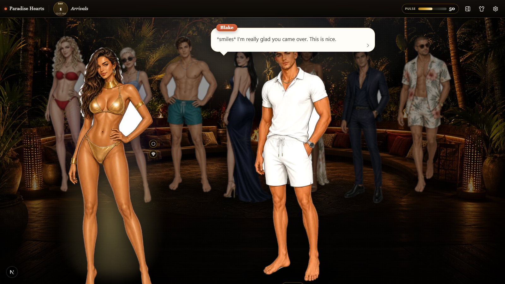
The chosen Deep response and NPC reply are replayable scene beats backed by the recorded turn result.
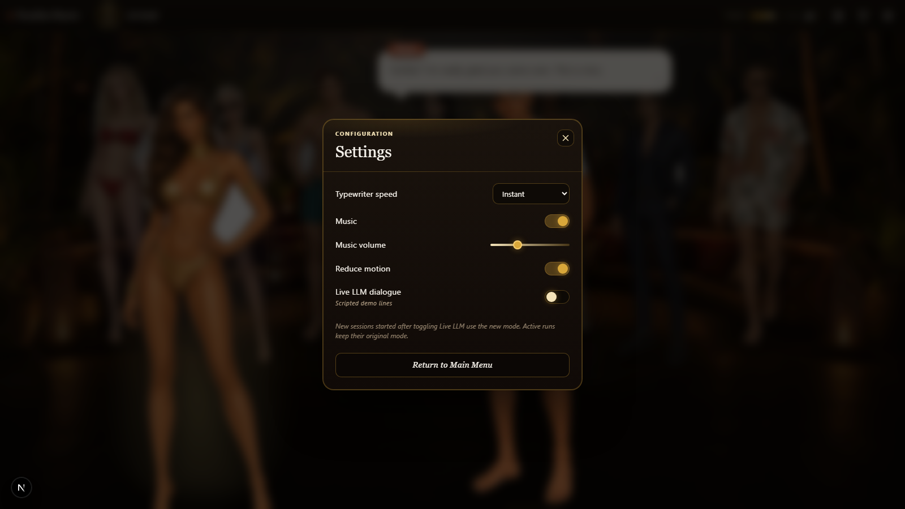
Configuration drawer. Dark gradient, gold-bordered, custom switch with golden dot. Typewriter speed, reduce motion, audio coming later.
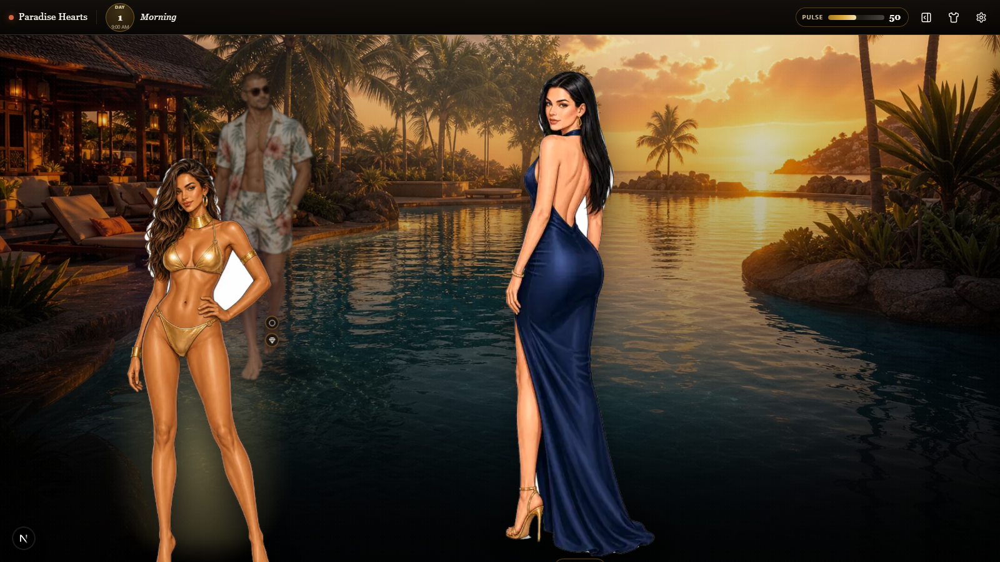
The first coupling decision appears only after the player has met the cast. The engine exposes the legal partners; the browser renders the shared action vocabulary.
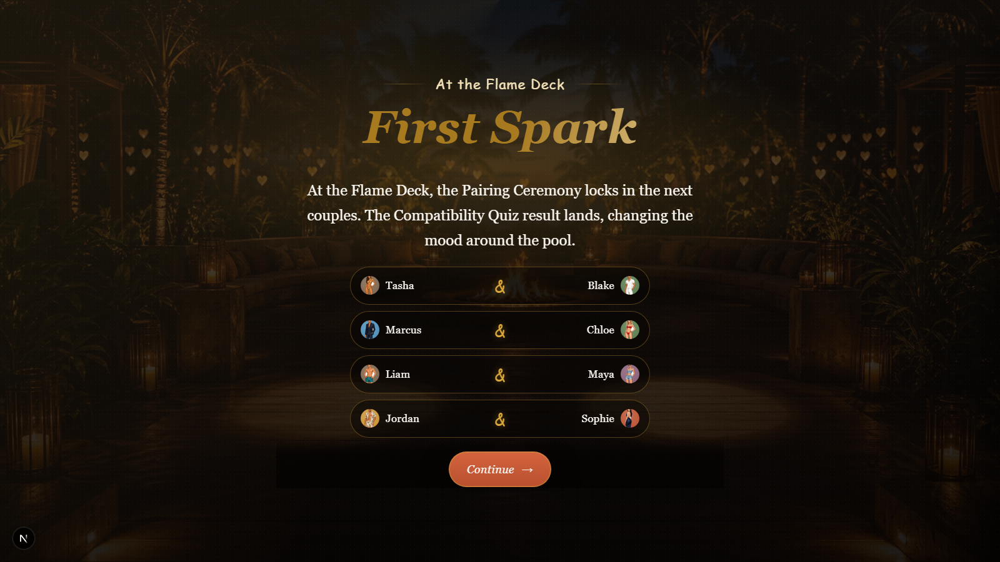
Paradise Calls · First Spark. The deterministic coupling resolves before the narrator presents the ceremony beat.
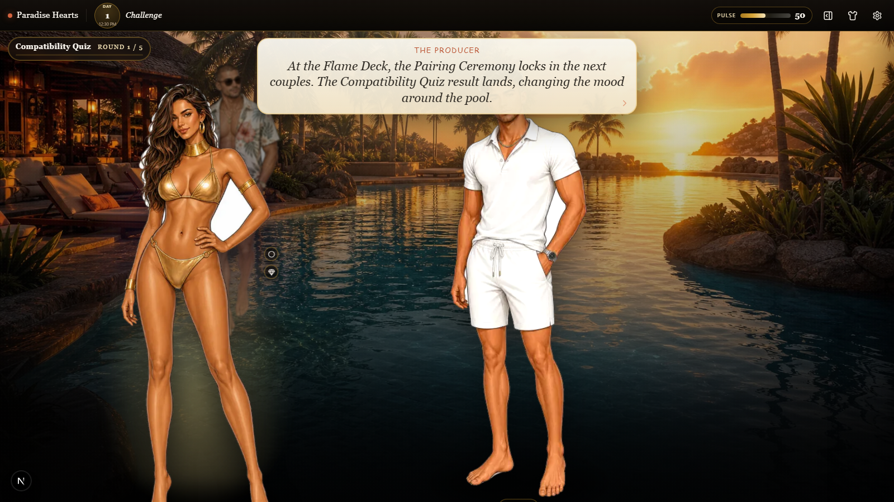
The post-coupling Compatibility Quiz arrives as a narrated scene beat, while scoring remains deterministic engine state.
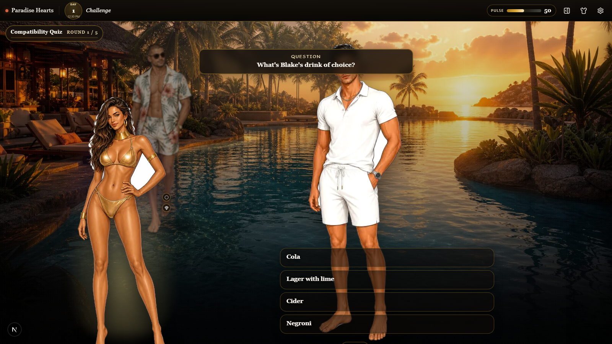
A round-based minigame uses the same typed action and scene pipeline as conversations, ceremonies, replay, and eval scenarios.
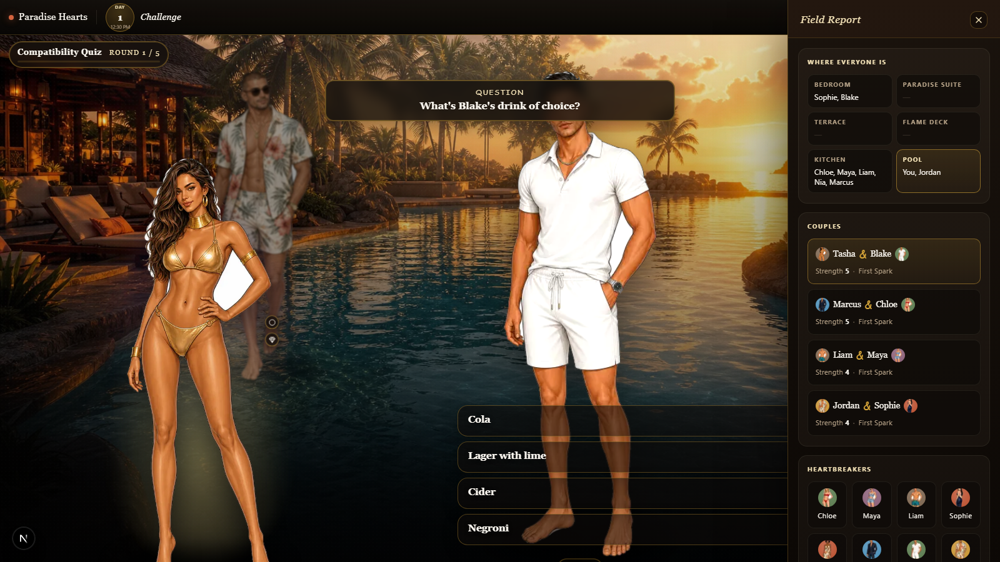
The live field report combines resort locations, current couples, cast profiles, and remembered facts without moving canonical state into the browser.
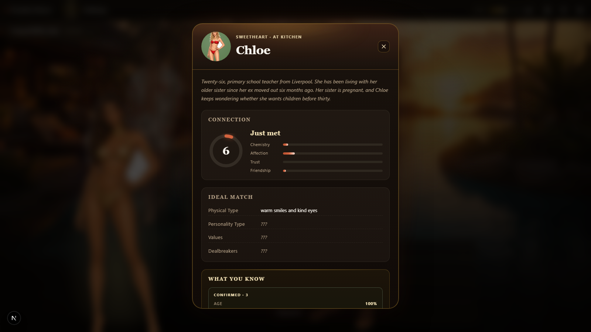
A Heartbreaker profile combines relationship signals with gated, structured knowledge learned through play.